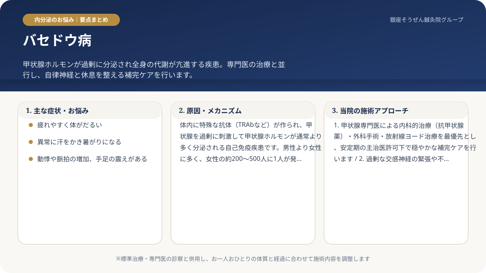

バセドウ病の鍼灸
甲状腺ホルモンが過剰に分泌され全身の代謝が亢進する疾患。専門医の治療と並行し、自律神経と休息を整える補完ケアを行います。
まず知っておきたい要点と改善の流れ

体内に特殊な抗体（TRAbなど）が作られ、甲状腺を過剰に刺激して甲状腺ホルモンが通常より多く分泌される自己免疫疾患です。男性より女性に多く、女性の約200〜500人に1人が発症するとされます。代謝が過剰に進むことで動悸、発汗、体重変化、手指の震え、イライラ、眼球突出など多彩な全身症状が現れます。
このようなお悩みはありませんか？
- ✓疲れやすく体がだるい
- ✓異常に汗をかき暑がりになる
- ✓動悸や脈拍の増加、手足の震えがある
- ✓イライラや不眠、甲状腺の腫れが気になる
当院の施術アプローチ・改善の流れ
なぜ鍼灸で改善へ向かうのか？（作用機序の図解）
バセドウ病に対する鍼灸は、神経-内分泌-免疫ネットワークと末梢循環の調整機序を通じて、お体本来の回復力を引き出します。

内科専門医の薬物・食事管理を前提に、足三里・三陰交・背部経穴へ安全にアプローチします。
ストレス由来の交感神経過緊張を鎮め、ホルモン分泌や血糖・尿酸管理を乱す疲労要因を軽減します。
手足や内臓の血流を促し、合併しやすいしびれ・胃もたれ・倦怠感・関節痛の負担を和らげます。
皮膚衛生や低刺激を徹底し、日々の生活習慣改善を続けやすい安定した体調づくりを支えます。
院長YouTube解説・関連動画
バセドウ病の改善は甲状腺ホルモンを正常にすること
バセドウ病を改善する目的は、血液の中に異常に増えた甲状腺ホルモンを正常にすることです。その改善方法は３つです。その３つの方法は内科的な方法、外科的な方法、放射線を使う方法です。
①「内科的な方法」
内科的な方法は、甲状腺ホルモンの合成や分泌を抑える抗甲状腺剤を使用する方法です。抗甲状腺剤（メルカゾールやチウラジール）を1日約３〜６錠、使用します。
普通は、抗甲状腺剤の服用を始めてから1〜３ヶ月後には血液の中の甲状腺ホルモンの濃度は正常と言われる範囲まで低下します。
さらに、バセドウ病の症状も改善します。改善してきた後は少しずつ使用する量を減らします。最終的には、維持のために１日約1～2錠の抗甲状腺剤を使用します。
そして、TRAb が陰性になったことが確認できた時に中止になります。 多くの人はすべての期間を合わせると、２年以上の使用が必要となります。
抗甲状腺剤の副作用で１番多い副作用は皮疹で抗甲状腺剤を使用する人の数％の人に見られます。副作用がひどい場合には薬の変更や中止が必要になります。
また、重大な副作用に無顆粒球症があります。これは、血液の中の白血球の数が極端に減るという症状が見られます。白血球が減少するため、感染症に対しての抵抗がなくなり、放置すると非常に危険です。
発熱や咽の痛み、リンパ腺が腫れるなどが感染症の兆候です。このような症状が現れた場合、すぐに薬の服用を中止してください。また、必ず医療施設で白血球を調べることをお勧めします。
薬を中止した場合、普通は約１〜２週間で白血球数が正常に戻ります。このような副作用は薬を始めてから約１〜２ヶ月以内に見られることが多いです。
内科的な改善方法の欠点は、期間が長いことや比較的副作用が多いこと、薬をやめた後の再発が多いことなどです。
一般的に、甲状腺機能が進んでいる間は脈拍や動悸、震えを減らすためにベータブロッカーとよばれる薬を使用します。また、ルゴール液などヨード剤もバセドウ病の改善には有効です。
しかし、ルゴール液やヨード剤の効果は長続きしません。そのため、手術前など特殊な場合にのみ、短期間で使用されます。
②「外科的な方法」
外化的な方法は、手術によって大部分の甲状腺を除去する方法です。この手術には約１週間の入院が必要です。
さらに、手術の前には甲状腺の機能を正常にしておくことが必要です。この改善方法の良い点は、手術の後すぐに甲状腺の機能が正常に戻る点です。しかし、手術によって再発したり、甲状腺機能が低下したりする可能性もあります。
③「放射線を使用する方法」
放射線を使用する方法は、131Iと呼ばれる放射線をだすヨードを使用する方法です。 131I は甲状腺に取り込まれます。取り込まれた放射線によって甲状腺組織を破壊し、甲状腺ホルモンの分泌される量を減少させることができるのです。
使用した後、約1〜2ヶ月で甲状腺の機能は正常に改善していきます。しかし、その後機能が低下することも多いです。機能が低下してしまった場合、その後一生甲状腺ホルモンを服用することが必要になってしまいます。
入院する必要はなく、副作用もありませんが、妊娠中は使用することができません。
バセドウ病は基本的には保険が適用されます。専門の甲状腺外来にかかる費用は下記を参照にしてください。ただし、バセドウ病は専門機関でも回復の難しい疾患と言われています。
①「初めての外来にかかる費用」
初めての外来の場合調べる項目は、血液と尿、甲状腺超音波です。その際にかかる費用は、23,000 円（3割で6,900 円）程度と言われています。
②「初めての外来から2〜６ヶ月間」
初めての外来から２ヶ月間の訪問間隔はおよそ２週間に１回です。その際の調べることは血液です。かかる費用は13,500 円（3割で4,050 円）程度です。
初めての外来から3ヶ月目、4ヶ月目、（5ヶ月目）、6ヶ月目も血液です。その際にかかる費用は15,000 円（3割で4,500 円）程度です。
③「初めての外来から半年以上経過した場合」
初めての外来から半年異常経過した場合の訪問間隔は甲状腺機能が変動している時は約1 ～ 2ヶ月に1回、安定している時は約2 ～ 3ヶ月に1回と言われています。
この際調べることは、血液です。必要に応じては尿も調べます。かかる費用は11,000 円～ 19,500 円（3割で3,300 円～ 5,850 円）程度です。
薬の量が1 日おきに1 錠、またはそれより少ない量で安定している時期では、3ヶ月に1回の訪問で、調べることは血液です。この場合も必要に応じて尿も調べます。かかる費用は13,500 円～ 18,000 円（3割で4,050 円～ 5,400 円）程度です。
バセドウ病には多くの症状があります。さらに、バセドウ病はすぐには改善しない病気です。辛い症状が続く場合は日常生活を改善することや安静にすること、ストレスを溜めないことが重要です。
辛抱強く耐えることになるかもしれませんが、辛い場合には西洋医学だけではなく、東洋医学などの自分の体調に合った専門機関に相談することをお勧め致します。
循環器・動悸・高血圧・心不全補助の全身ツボ図解
実際の施術ではお一人おひとりの体質・症状に合わせて選穴しますが、動悸・不整脈・本態性高血圧・慢性心不全の循環器治療併用サポートの臨床でよく用いられる代表的なツボの目安です。

📌 代表的なツボの詳細一覧表を開く（6穴） ▼
| ツボ名 | 位置の目安 | 主な狙い | セルフケアの注意点 |
|---|---|---|---|
| 内関（ないかん） | 手首の横ジワから指3本分肘寄りの中央 | 動悸・不整脈・狭心症補助で最も研究されている心包経の要穴 | 胸痛・冷や汗・失神がある場合は直ちに救急受診してください。 |
| 膻中（だんちゅう） | 胸の中央（胸骨上） | 胸のつかえ・交感神経の高ぶり・不安感の鎮静 | 強く押さず手のひらで温めながら深呼吸します。 |
| 神門（しんもん） | 手首の横ジワの小指側のくぼみ | 心拍の落ち着き・緊張性の動悸と不眠ケア | ペースメーカー使用時は電気鍼を避け手技のみで行います。 |
| 曲池（きょくち） | 肘を曲げた外側のシワの先端 | 血圧変動に伴う上肢・頭部の緊張緩和 | 降圧薬・心不全薬の自己判断での中止は厳禁です。 |
| 足三里（あしさんり） | 膝の下外側、指4本分下 | 末梢循環・自律神経バランスとQOL維持 | 身体負担の少ない穏やかな低刺激で行います。 |
| 太衝（たいしょう） | 足の甲、親指と人差し指の骨の間 | ストレス性の血圧上昇・末梢血管収縮の緩和 | 就寝前の優しい指圧でリラックスを促します。 |
国際査読論文の科学的エビデンス
国際的な医学データベース（PubMed・Cochrane等）で報告されている動悸・不整脈・本態性高血圧・慢性心不全の循環器治療併用サポート領域の代表的な査読済み鍼灸研究をまとめています（標準治療との併用や研究上の限界を含めて正確に掲載）。
📚 査読論文データ・PubMed出典リンクを開く（4件） ▼
| 年・研究デザイン | 対象・規模 | 主な結果 | 限界・出典 |
|---|---|---|---|
| 2026年 メタ解析 | 2型糖尿病 20 RCTs（n=1,479） | 空腹時血糖（SMD -0.52, p=0.009）、HbA1c（SMD -0.76, p=0.002）、HOMA-IR（p<0.0001）を有意低減。 | 将来研究のばらつき懸念。食事・運動・薬物療法の継続必須。 Postgrad Med J (PMID: 41052150) |
| 2025年 メタ解析 | 糖尿病性末梢神経障害（DPN）14 RCTs（n=1,169） | 偽鍼比でVAS疼痛-1.44cm、神経症状スコアTCSSも有意改善（WMD -1.22）。 | GRADE確実性は低い。足部の熱傷・感染予防に細心の注意。 Curr Pain Headache Rep (PMID: 40220243) |
| 2024年 メタ解析 | 橋本病（慢性甲状腺炎）14 RCTs（n=1,020） | レボチロキシン単独比でTPOAb・TGAb低下およびTSH・FT3・FT4の調整を示唆（p<0.00001）。 | 中国国内RCT中心・盲検化不足。甲状腺薬の自己中断は厳禁。 Medicine (PMID: 38428856) |
| 2024年 メタ解析 | 単純性肥満 25 RCTs（n=2,018・生活習慣併用） | 生活習慣単独比で体重-4.73・BMI -2.11・腹囲-4.96（p<0.00001）、中性脂肪・LDLも有意改善。 | 介入期間・方法の異質性高、長期リバウンド防止は要検証。 Diabetes Metab Syndr Obes (PMID: 39582784) |
参考文献・出典
- 2026年 メタ解析（2型糖尿病 20 RCTs（n=1,479））— Postgrad Med J (PMID: 41052150)
- 2025年 メタ解析（糖尿病性末梢神経障害（DPN）14 RCTs（n=1,169））— Curr Pain Headache Rep (PMID: 40220243)
- 2024年 メタ解析（橋本病（慢性甲状腺炎）14 RCTs（n=1,020））— Medicine (PMID: 38428856)
- 2024年 メタ解析（単純性肥満 25 RCTs（n=2,018・生活習慣併用））— Diabetes Metab Syndr Obes (PMID: 39582784)
よくある質問（FAQ）
Q. 抗甲状腺薬を服用中でも鍼灸を受けられますか？▼
Q. 発熱や喉の痛みがあるときは受診できますか？▼
あわせて読まれる関連疾患（内分泌のお悩み）
甲状腺中毒症が急激に悪化し多臓器不全を招く命に関わる緊急事態。急性期は救急搬送が絶対最優先で、安定期のみ補完ケアを検討します。
副腎髄質などの腫瘍からカテコールアミンが過剰分泌される疾患です。専門医の手術・薬物管理を最優先に、術後や安定期の自律神経ケアを支えます。
脈が速い・遅い・不規則になる状態。循環器専門医での精査・治療を最優先とし、安定期には内関・神門など7つのツボと自律神経ケアで支えます。
正常な拍動の間に不規則な拍動が混じり脈が飛ぶ不整脈。心疾患の有無を医師に確認したうえで、自律神経と生活リズムを整えるケアを行います。
皮膚の下に余分な水分がたまる状態。腎臓・心臓・肝臓等の基礎疾患確認を優先し、血流低下や自律神経由来のむくみを穏やかに整えます。
脳下垂体の良性腫瘍により成長ホルモンが過剰分泌される疾患。専門医の手術・薬物療法と合併症管理を最優先し、安定期の体調ケアを補完します。
CLINICAL RECOVERY CASES
✨ 実際の臨床改善事例・回復経過を見る
銀座本院をはじめ各院での実際の改善事例を症状別に絞り込んでご確認いただけます。
おひとりで悩まず、まずはご相談ください
銀座本院・川口・大宮・横浜・博多・田無の各院でご予約を承っております。